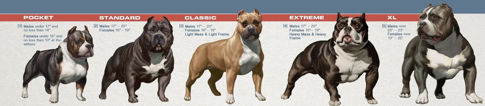

THE FIVE SIZES OF AMERICAN BULLIES
This is an amendment to the basic standard which a Pocket Bully is
determined by its adult height. Males under 17" and no less than
14" at the withers. Females under 16" and no less than 13" at the
withers.
Important to note that Pocket Bully variety is simply shorter than
the Standard American Bully. Pocket Bully dogs share the same build,
body type, and breed type as the Standard American Bully, and are
not to be penalized for exhibiting heavily muscled, massive, bulky
body type.
Standard
The American Bully should give the impression of great strength for
Its size. It is a compact and medium/large size dog with a muscular
body and blocky head. The American Bully should have the appearance
of heavy bone structure with a bulky build and look.
The American Bully is a breed of dog that derives from the American
Pit Bull Terrier and the American Staffordshire Terrier. It is highly
suspected that various Bulldogs breeds were also used in It's creation
as well.
The American Bully came to fruition because of a preference and a popular
desire to create something different than the standard written for the
above mentioned breeds. The breeders wanted more! More muscle, more bone,
more head, and an overall wow factor that was absent in some of the dogs
seen as the standard of the breeds in which it derived from.
Classsic
This is an amendment to the basic standard which a Classic Bully
is determined by its body structure and build. Both sex dogs
with lighter body frames and less overall body mass, but still
exhibiting "bully" traits.
Example of Bully Traits - Blocky/heavy heads; short/square
muzzles; heavier bone, muscle, and compact body. Overall more
bone and substance than the modern and more "terrier type" American
Pit Bull Terrier and American Staffordshire Terrier.
Classic Bully to give the appearance of bullier, old style American
Pit Bull Terriers and/or American Staffordshire Terrier, which
made up the origin of the American Bully.
Classic Bully variety is simply an American Bully dog having lighter
body frames (lighter bone) and less overall body mass (less substance)
than the Standard American Bully. Aside from this difference, the
Classic Bully variety follows the same standard as the Standard American Bully.
Exotic/Extreme
Often referred to as an "Exotic Bully", The Extreme American Bully is
a more exaggerated version of the Standard American Bully. The Extreme
American Bully carries more mass, girth, bone, and substance than the
Standard American Bully.
The Exotic Bully is a spinoff of the American Bully. It is a breed that breeders have developed
out of creative expression, using the more overdone features of smaller bulldog
breeds like the French Bulldog, Shorty Bull and English Bulldog.
XL
This is an amendment to the basic standard which a XL Bully is
determined by its adult height. Males over 20-23" at the withers.
Females over 19"-22" at the withers.
Males over 20-23" at the withers. Females over 19"-22" at the withers.
Important to note that the XL Bully variety is simply taller than the Standard American Bully.
XL Bully dogs share the same build, body type, and breed
type as the Standard American Bully, and are expected to
carry a heavily muscled, massive, bulky body type.